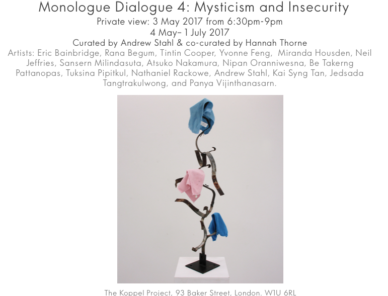

She Performs
14th - 17th June 2018
London Gallery West Project Space, London HA1 3TP

Mise-en-scène
20th September – 15th November 2017
Chelsea Waterside ArtSpace, Hepworth Court, Grosvenor Waterside, Gatliff Road, London SW1W 8QP
-page-001.jpg)
Hauntopia / What If
8th - 9th September 2017
Research Pavilion, Sala del Camino, Campo S. Cosmo, Giudecca 621, 30133 Venice, Italy
Beyond the Borders: Joseonjok’s Ambiguous Identity
3rd – 5th August 2017
The Crypt Gallery (St Pancras Church), Euston Rd, Bloomsbury, London NW1 2BA

Transcultural Dialogues in an Insecure World
15th June 2017, 7-8:30pm
The Koppel Project, 93 Baker Street, London

Judgment Calls: Ethical Dilemmas in Art and Architectural Research
13th June 2017, 10am–8pm
The Bartlett School of Architecture, UCL, 22 Gordon St, London

Slade Graduate Degree Show 2017
8th to 18th June 2017
Slade School of Fine Art, University College London, Gower Street, London WC1E 6BT

Monologue Dialogue 4: Mysticism and Insecurity
8th May to 1st July 2017
The Koppel Project, 93 Baker Street, London W1A 4SD
Tipping Point
23rd March to 12th May 2017
The Foundry, 17 Oval Way, London SE11 5RR
On The Verge
8th to 17th March 2017
12 Star Gallery, 32 Smith Square, London SW1P 3EU

The Intercontinental
22nd to 26th February 2017
Roaming Room, 24 Manchester Street, London W1U 4DJ

Refuse : Refuge : Re-fuse
2nd June to 5th July 2016
The Koppel Project, 93 Baker Street, London W1A 4SD
Indigo Vastness
28th January to 2nd March 2016
The Street Gallery, University College Hospital, London

No Monkey Business
14th Febuary 2016, 12-6pm
Q-Park China Town, 20 Newport Place, WC2H 7PR

Exhibition & Launch Event: ‘HYG Editions’
19th November to 31st January 2016
Hundred Years Gallery, London
Practices in Dialogue: Loss and Creation’.
Wednesday 16th December 2015, 6-8pm
Hundred Years Gallery, London
Now in Reverse: An Amnesiac’s Stories
Solo show by Yvonne Feng
Private View: 3rd December, 7-9:30pm
3rd to 20th December 2015
Hundred Years Gallery, London